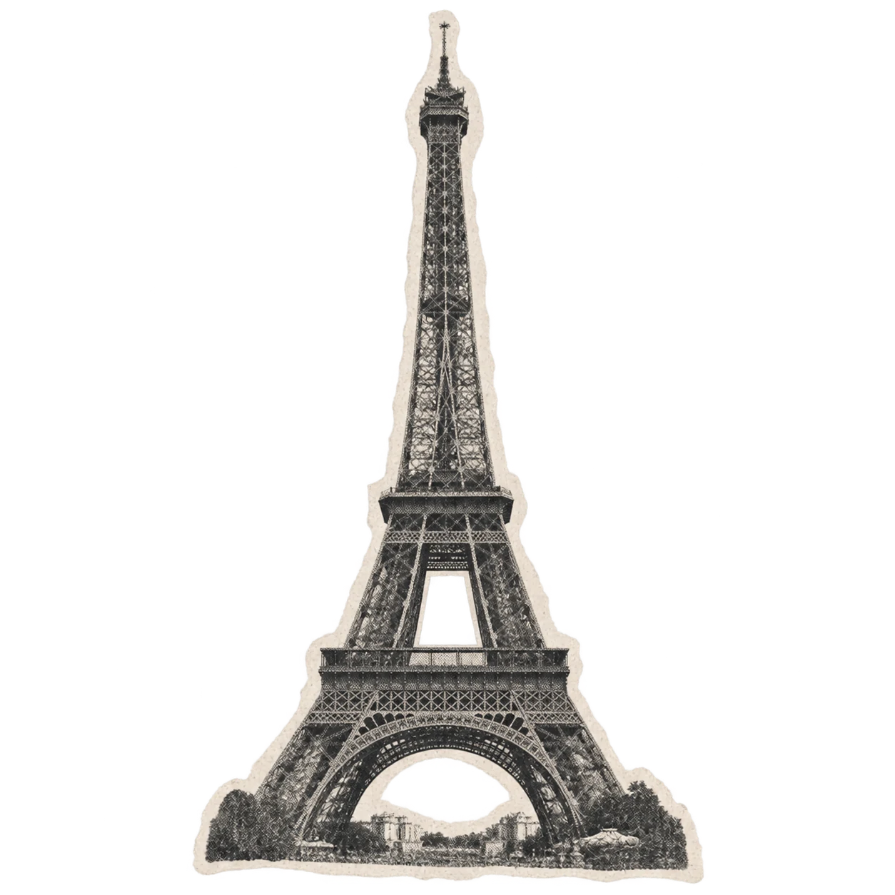
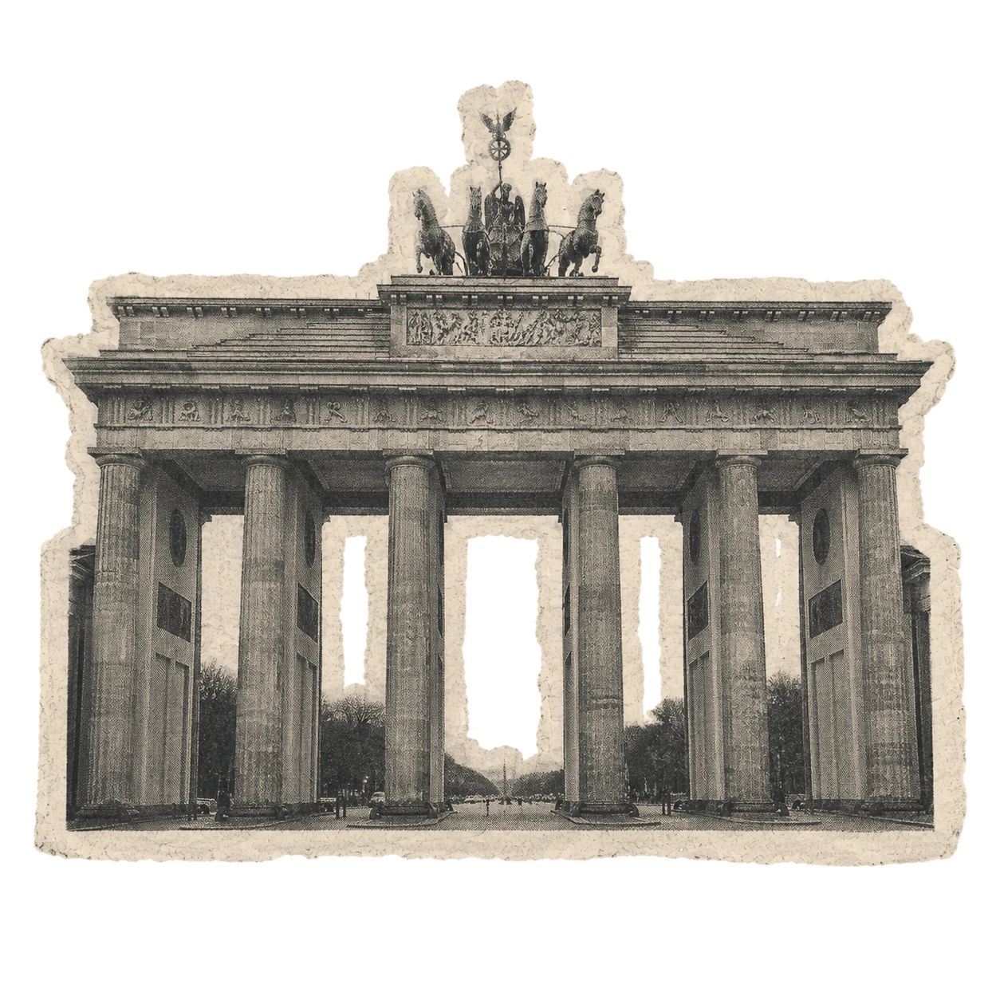
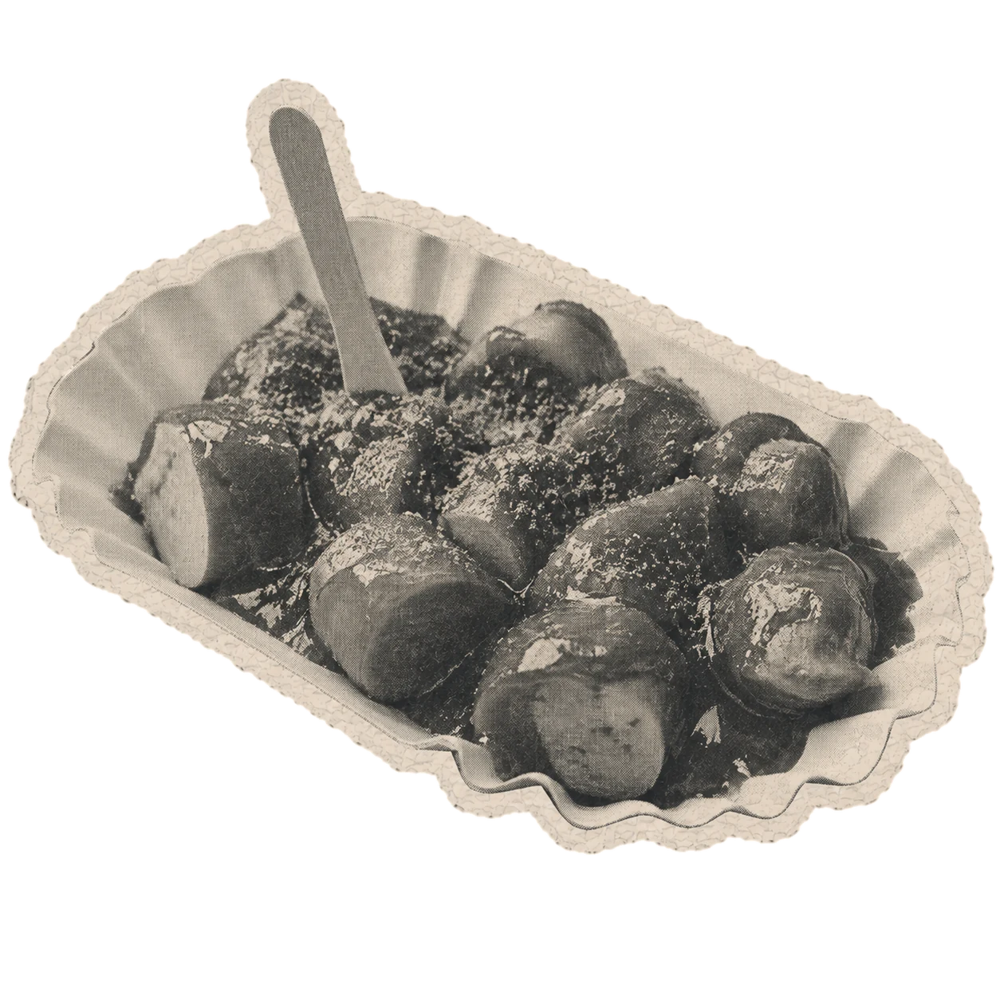
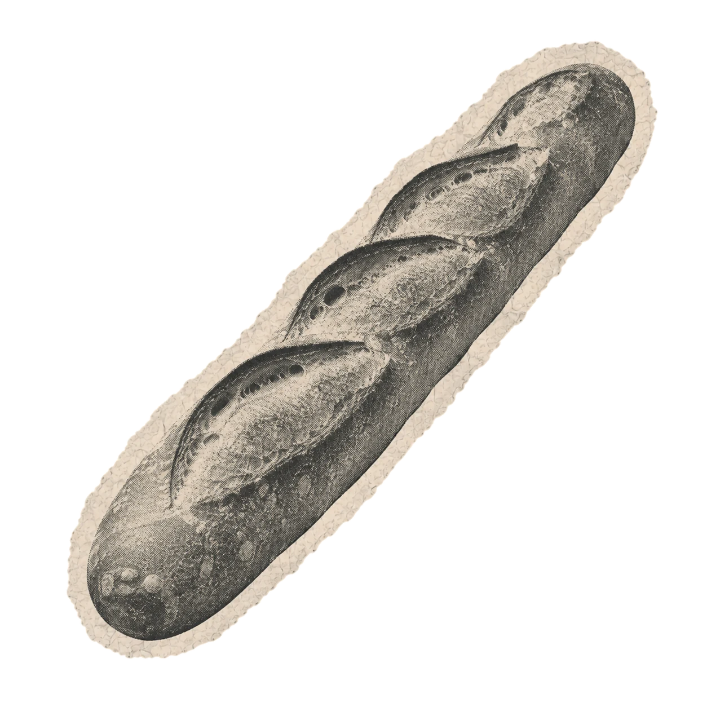

Wir sind die Community für Deutsche, die Paris zu ihrer zweiten Heimat gemacht haben. Einmal im Monat sitzen wir in einem Pariser Restaurant an einem langen Tisch — gutes Essen, neue Kontakte und jedes Mal die Erkenntnis, wie viel Berlin und Paris einander zu sagen haben.


An unseren Tischen sitzt die Gründerin aus dem 11e neben dem Doktoranden der Sorbonne, die Köchin neben dem Konzernjuristen, Menschen, die seit zwanzig Jahren hier leben, neben denen, die vorletzte Woche den Umzugswagen ausgeladen haben.
Was sie verbindet, ist nicht der Pass. Es ist die Erfahrung, in zwei Sprachen zu denken, zwei Arbeitskulturen zu kennen und in beiden Ländern ein bisschen fremd und ein bisschen zuhause zu sein.
Wir moderieren das nicht. Wir reservieren nur den Tisch.

Wir sind keine Institution und kein Verein, sondern eine Gästeliste, die weiterwächst. Schreib uns, wer du bist und was dich nach Paris gebracht hat — der Rest ergibt sich beim Essen.